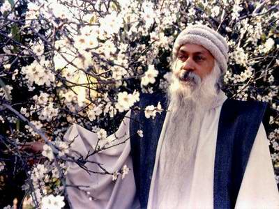

奥秘心理学
原序
人类演化的过程就是意识发展的过程。树木比石头更有意识；动物比树木更有意识；人比动物更有意识；觉悟的人比人更有意识。佛境、基督意识、开悟，它们指的都是同一件事情：完全意识的开花。物质是完全没有意识的；一个觉悟的人则是完全清醒的。人处在两者之间：既不是此，也不是彼。他生活在不上不下的状态里，不再是动物，也没有成为神；不再是过去的，也没有成为他可以成为的。
有了人．无意识的演化结束了，奥修告诉我们：「而有意识的演化开始了。但是有意识的演化也不是非从任何特殊人的身上开始不可。只要你选择它开始，它就开始了。」
生命意味着运动。它不可能在我们的脚下停留。要么我们演化到更高的意识水平，要么我们就倒退回去。选择是我们的。我们不能不选择。即使不选择也是一种微妙的选择。大多数人都在寻求遗忘：回到无意识的状态。他们借助酒精和药物、借助工作、借助性、借助感官刺激来寻求它。只有少数人选择走上通往更高意识的旅程。奥修在这本(奥秘心理学）里所做的演讲就是针对这些少数人的。
他从西方心理学停止的地方开始。他走得比弗洛伊德、比荣格、比各种新的关于人类潜在活动的理解更远。如果弗洛伊德的心理学是病理心理学．马斯洛的心理学是健康人的心理学．那么奥修的心理学就是开悟心理学、佛境心理学，奥修不仅仅是开悟大师，他也是心理学大师。他一层一层地剥开我们的存在．展现我们隐藏的内心深处。他从肉体开始，一步一步地讲到超越。他从已知开始讲到不可知。他从我们站立的地方开始讲到我们可能达到的地方。在东方，他说：「它不是一个心理学的问题．它是一个存在的问题。它不是一个精神健康的问题。相反，它是一个灵性成长的问题。问题不在于你做什么；问题在于你是什么。」
奥修在这些演讲中所谈论的内容不亚于创造了一个新人类。他的整个努力都是为了创造一种气氛，使佛境可以逐渐开花。为了它的发生，他说：我们必须接受人的全部。既不能否认理性，也不能否认非理性;既不能否认理智，也不能否认感情；既不能否认科学，也不能否认宗教。一个人必须保持流动，能够从一极移到另一极。头脑必须接受逻辑的、理性的训练。他说；但是它必须同时接受非理性的――无理性的――静心的训练。理性必须接受训练，同时感情也必须接受训练。怀疑必须接受训练，同时信任也必须接受训练。怀疑必须在那里，信任也一样，否认理性和否认非理性的人都不再成长。除非完全地成长，否则你不可能成长。
奥修不是一个哲学家。他的话不是为了用更多的知识来填塞我们的头脑。它们是为了推动我们直接体验那个超越语言的。它们是为了推动我们走向自己内在的演化．走向对我们的潜力、对种子的可能性的终极了悟。
目录
| 第01章 向内的革命 |
 |
| 第02章 静心的奥秘 | |
| 第03章 性、爱和祈祷：走向上帝的三步 | |
| 第04章 亢达里尼瑜伽：归根复源 | |
| 第05章 秘密的游戏：一个成长的障碍 | |
| 第06章 梦的心理学 | |
| 第07章 超越七个身体 | |
| 第08章 成为和是 | |
| 第09章 知识的错误 | |
| 第10章 上帝之富 | |
| 第11章 恰当的提问 | |
| 第12章 平衡理性和非理性 |